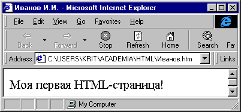
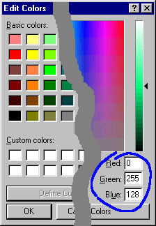
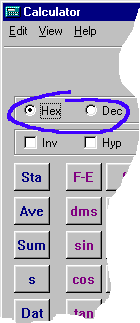

Для того, чтобы создать HTML-страницу, достаточно знать команды, их параметры и немногие правила их использования, которые здесь рассматриваются.
Общая структура HTML-текста определяется командами, перечисленными в табл. 1 и всегда имеет вид
| Эти и только эти команды являются обязательными! |
Например, простейшая страница определяется HTML-текстом
|  |
| Рис. 5. Первая страница. |
<HTML>
<HEAD> <TITLE> Иванов И.И. </TITLE>
</HEAD>
<BODY>
Моя первая
HTML-страница!
</BODY>
</HTML>
и в браузере выглядит, как на рис. 5 (имя файла и путь к нему видны на этом же рисунке в поле Address).
Если сюда между <HEAD> и </HEAD> вставить команду
<bgsound src="file:///c:/WINDOWS/MEDIA/Tada.wav">,
то после загрузки страницы в браузер (при наличии звуковой платы и операционной системы Windows, установленной в каталог c:\WINDOWS) прозвучит знакомая музыкальная фраза (щёлкните по картинке рис.5).
Команды форматирования текста описаны в табл. 2.
Шрифты. Если в HTML-тексте не устанавливаются никакие шрифты, то любой графический Web-браузер показывает страницу только в двух шрифтах – одном пропорциональном (чаще Times New Roman или Arial) и одном моноширинном (обычно Courier New). Браузер позволяет выбрать любую пару таких шрифтов и их размер. Для задания шрифтов, которые не может изменить пользователь, нужно воспользоваться командой<FONT>.
Всего в HTML-странице можно использовать только 7 различных размеров символов, которым присвоены условные номера от 1 до 7. Один из них считается базовым – это либо 3-й размер, либо тот, который установлен командой <BASEFONT>. Командой <FONT> можно установить условный размер символов либо прямо, либо указав, насколько он меньше или больше базового. Реальный размер символов выбирается уже пользователем в браузере. Точнее, в браузере можно установить реальный (в пунктах) базовый размер шрифта, а остальные размеры определятся пропорционально.
Цвета текста, фона и других элементов страницы можно задавать
либо их именами (black, gray, white, red, blue, green, yellow,
aqua и т.д., несколько сот имён), либо строкой вида
#rrggbb. Здесь rr есть шестнадцатеричный номер одного
из 256 оттенков красного цвета (Red от 00 до FF = 255),
gg – шестнадцатеричный номер одного из 256 оттенков зелёного
(Green), bb – номер одного из 256 оттенков синего
(Blue). Например, blue и #0000FF
определяют один и тот же синий цвет. Номера цветов можно взять в графическом
редакторе Paint, но их нужно переводить из десятичной
системы в шестнадцатеричную, например, с помощью программы
Calculator (см.
рис.6).
|  |  |
| Рис. 6. Получение номера цвета в программах Paint и Calculator. | |
Ссылки на графические (команда <IMG SRC=...>
в табл.
4), звуковые, и др. мультимедийные файлы, а также на другие HTML-страницы
(команда <A HREF=...> в табл.
5), расположенные на той же машине или в той же локальной сети, имеют
простой вид – это либо полный путь к файлу и имя файла, либо путь
относительно папки, в которой находится ваш HTML-файл, и имя целевого файла.
Ссылки записываются в кавычках.
Примеры:
Полные адреса –<IMG
SRC="D:/HTML/images/bird.jpg"> На
диске D: вашей машины<IMG
SRC="//M1/Dsc1/HTML/images/bird.jpg"> На
диске Dsc1 сетевой машины М1.
Относительные адреса
–<IMG
SRC="images/bird.jpg"> В папке
images, которая лежит в одной папке с вашим HTML-файлом, независимо от
машины
Относительные адреса очень удобны для разработчика HTML-страниц. В случае, когда страница делается для установки на Web-сервере, ссылки имеют несколько более сложный вид (см. соотв. раздел).
Возможны также внутренние ссылки, т.е. ссылки не на начало, а
внутрь страницы. Они устанавливаются с помощью параметра NAME (см.
табл.
5), указывающей цель ссылки и определяющей имя цели. Это имя со знаком
# перед ним записывается в параметре HREF или
USEMAP (см.
табл. 4 и табл.
5) сразу после ссылки на страницу (если это ссылка на ту же страницу, то она
не указывается, см. рис. 3).
Пример:<A
HREF="Ivanov.htm#Biography">Иванов</A>
Ссылка
на тот раздел страницы Ivanov.htm, где внутри команды <A
NAME="Biography">...</A> записана биография Иванова
Чувствительными изображениями называют картинки на
HTML-странице, от которых идут гиперсвязи. Эти картинки "чувствительны" к щелчку
мыши. Чтобы создать чувствительную картинку с одной гиперсвязью, достаточно
написать
команды
<A
HREF="Ivanov.htm#Biography"> (слово
<IMG
SRC="Ivanov.jpg"> Иванов </A>Иванов не
обязательно, если достаточно его портрета).
Но HTML позволяет создавать картинки, от разных частей которых идут разные
гиперсвязи. Это так называемые чувствительные карты. Они создаются
с помощью команд <MAP>, <AREA> (табл.
5) и параметра USEMAP команды <IMG> (табл.
4). Пример приведён на рис. 3.
Таблицы служат для улучшения форматирования HTML-страниц, в которых требуется сохранение взаимного расположения текста, графики, колонок и пр. при изменении размеров окна браузера и шрифтов. Команды и их параметры для создания таблиц приведены в табл. 6, а пример описания таблицы – на рис. 3. Правила написания этих команд следующие:
<TABLE>...</TABLE>.
<TABLE>...</TABLE> должны
находиться только команда заголовка таблицы
<CAPTION>...</CAPTION> и команды строки
<TR>...</TR>.
<TR>...</TR> должны
находиться только команды ячеек <TD>...</TD> и
<TH>...</TH>.
<TD>...</TD> может
находиться описание вложенной таблицы.
COLSPAN и ROWSPAN, позволяющие
объединять соседние ячейки столбца или строки, не влияют на ширину строки и
высоту столбца. А теперь рассмотрим язык HTML более детально с помощью примеров
Назад | Содержание | Вперед